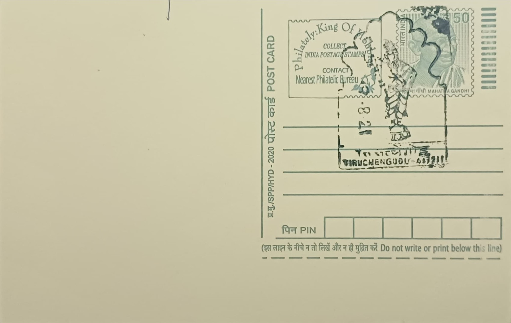

Lord Ardhanareeswar
அர்த்தநாரீஸ்வரர்


The hill temple at Tiruchengode traces its sacred identity to the Tamil Sangam-era name Neduvelkundru, by which the site is recorded in the ancient epic Cilappatikaram, long before its present name took hold. Local tradition holds that the hillock itself is sanctified ground associated with Shiva's composite Ardhanareeswara form, in which the god's body is divided equally between masculine and feminine halves. This founding association set the hill apart from most Shaiva sites in Tamil Nadu, where Ardhanareeswara ordinarily appears only as one sculptural panel among many rather than as the presiding deity, giving Tiruchengode its distinct devotional character from a very early period.
The Arthanareeswarar Temple ranks among the 275 Paadal Petra Sthalams, the shrines glorified in the Thevaram hymns of the Nayanar saints, with verses attributed to Thirugnanasambandar and later Arunagirinathar singling out the site for praise. Within the Kongu Nadu region it is counted as the fourth of the seven Tevara Sthalams, giving it a recognised place in the devotional geography of western Tamil Nadu distinct from the better-known Chola heartland shrines. Its core significance lies in being one of the rare Indian temples where the androgynous Shiva-Parvati union is worshipped as the primary deity rather than depicted as a secondary icon, a distinction that continues to draw scholarly and theological attention to the site.
Epigraphic evidence places the temple's documented history under the Chola dynasty, with inscriptions surviving from the reigns of Parantaka Chola and Gangaikonda Chola, indicating active royal patronage well before the medieval period. Subsequent rulers, including the Pandyas, the Vijayanagara emperors and the Nayak governors, added to the structure in stages, and even a British colonial officer named Davis is credited with later renovation work. The temple's most prominent architectural feature, the north-facing Thirumalai Gopuram, rises approximately 84.5 feet and was constructed in 1512 under the Vijayanagara emperor Krishnadevaraya, while its basement platform was completed during the reign of Sadasiva Raya, reflecting the layered Dravidian construction typical of South Indian hill shrines built up across several dynasties.
The temple complex sits atop a hillock roughly 1,900 feet above sea level and faces west, an orientation that sets it apart from many Shiva temples and requires pilgrims to climb a long flight of stone steps to reach the sanctum. Sharing the same hill is the Chenkottu Velavar Temple, dedicated to Lord Murugan, making the summit a combined pilgrimage destination where devotees typically visit both shrines in a single ascent. This pairing of a Shiva-Shakti composite deity with a Murugan shrine on one hill is itself unusual among Tamil Nadu's hill temples and has shaped local festival practice, with processions and worship at both sanctums often observed together during major temple occasions.
The temple today functions under the administrative oversight of the Hindu Religious and Charitable Endowments Department of the Tamil Nadu government, which manages its upkeep, festival calendar and the maintenance of the hillside approach used by pilgrims. Academic interest in the site has continued as well, with historical studies of the Ardhanareeswarar temple at Thiruchengode examining its inscriptions and architectural phases in detail. Daily worship, the annual car festival, and a steady flow of pilgrims climbing the hill keep the shrine an active center of Shaiva practice in the Namakkal district rather than a purely historical monument.
| Date of Introduction | January 5, 2017 |
|---|---|
| Address | Senior Postmaster, |
| Tiruchengodu HO, | |
| Namakkal (dt.), Tamil Nadu - 637211. |